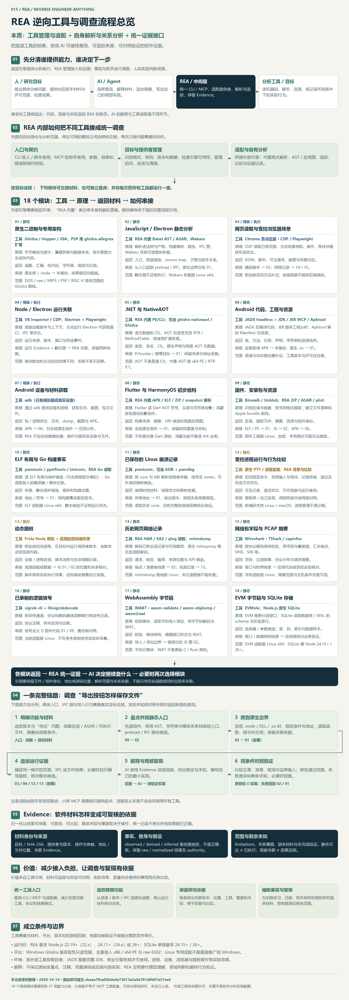

01 / REA RESEARCH
本质与定位
REA 是面向 AI 的软件调查中间层：管理逆向工具的选择、调用、目标身份和会话，适配不同引擎或材料格式，同时实现自己的解析、关系追踪与比较。它通过 CLI / MCP 把这些动作交给助手；“管理工具”在这里指接入和组织调查能力，安装所需外部引擎仍需分别完成。
管理和适配软件分析工具，补充结构解析、关系追踪与比较，再通过 CLI / MCP 把可核查材料交给 AI。围绕一个功能继续调查，最后用人和实验验证解释及局部实现。
“导出按钮背后，发生了什么？”
本仓库原创理解示意。此页面展示研究和固定教学流程，未连接 REA、模型或目标应用。
软件分析工具 + 统一调用与整理 + AI 调查流程。反汇编是其中一部分；REA 也分析应用结构、资源、网络记录和运行行为。
底层工具取得材料，REA 管理和适配工具并组织证据，AI 根据证据继续调查，人和实验验证成果。下面将我们的理解完整展开，后续章节提供模块、流程、对比和固定来源。
REA 是面向 AI 的软件调查中间层：管理逆向工具的选择、调用、目标身份和会话，适配不同引擎或材料格式，同时实现自己的解析、关系追踪与比较。它通过 CLI / MCP 把这些动作交给助手；“管理工具”在这里指接入和组织调查能力，安装所需外部引擎仍需分别完成。
读取原生二进制的函数、汇编和伪代码；分析 JavaScript / Electron 的模块、路由与 IPC；处理 .NET、Android、Flutter / HarmonyOS、固件和资源；观察浏览器、进程与运行现场；读取崩溃、网络、信号、WASM、EVM 和 SQLite 等材料。本导读用 18 个模块覆盖 37 项阅读分类，平台和动作范围分别核对。
CLI 和 MCP 共享应用层流程：先识别材料与目标，再选择合适的提供者；外部引擎反汇编 / 反编译，REA 内置解析器处理语法与格式，观察工具提供运行记录。应用层构建关系或比较结果，并连同来源、位置、身份、覆盖和未知返回 Evidence；AI 根据结果选择下一次查询，调查因此可以反复推进。
把分散的软件分析能力变成助手可调用、结果可回查的一套工作方式。对我们而言，可补充发布包和运行材料的研究、减少跨工具搬运、解释跨层功能，并积累结论、源码位置、实验和失败原因。定位是否更快、解释是否更准、整体成本是否下降，需要与直接读源码或手工分析做同条件对照。
可继续建设研究证据库、中文导读与 RAG 检索，开展源码 / 发布包对照、双版本变化研究、旧格式兼容与局部实现验证；也可为新架构或专有格式增加提供者，或把 REA 接入 Agent 工作台。网页展开八种建议场景，逐项列出材料、模块、实施方式、产物和验收；这些整合尚未实现。
输入一个明确问题、对应版本的程序 / 安装包 / 脚本 / 记录或观察目标，以及主机、引擎、范围和场景参数。输出函数与代码、模块与资源结构、调用或跨层关系、观察或比较材料，以及目标哈希、工具版本、来源位置、限制和未知。解释与局部实现由助手完成，可靠性再由人和实验检查。
Ghidra / Hopper / IDA 面向机器码；Babel AST / ASAR 与 Wakaru 面向脚本和产物；JADX / Apktool / adb 面向 Android；CDP / Playwright / V8 Inspector / Frida 面向现场观察或受控执行；Binwalk / Unblob、pwntools、TShark、sigrok、WABT、EVMole 等分别处理固件、ELF、网络、信号和特定字节码。REA 把这些不同结果连接到同一调查问题。
以导出按钮为例：限定版本与问题，盘点安装包和脚本，定位按钮入口，再追到 preload / IPC / 主进程和文件 API；遇到原生边界才补原生查询，静态材料不够时再补运行或网络记录。保存证据和未知，解释一条功能链，编写局部实现，最后用相同输入比较输出、异常与边界；按需要返回前一步。
Evidence 保留材料身份、参数、提供者、原始与归一化结果、位置、关系、coverage、limits 与未知，并区分 observed、derived、inferred 的依据性质。哈希用于绑定材料；静态可达、实际执行、运行关联和因果解释分别判断。一个函数或一批样本通过，只支持所检查范围，完整软件重建仍需更广的行为验证。
适合研究软件某个功能的内部实现、查找旧格式与接口、解释版本变化、定位故障、恢复局部算法以及保存旧软件。原生、Electron 和网站三组六步教学解释同一调查方法。公开 Notion、DX-Ball 和 TH04 案例可供阅读，但本仓库未重跑这些案例；网站前端记录也无法直接提供服务端内部源码。
REA 提供软件材料查询；RAG 提供已存资料检索；FCC 适配真实模型请求；Jev 指引帮助选择动作；Managed Agents 组织任务运行；cmux / Vibe42 提供人操作会话的入口。可以按需要组合，但要明确主机访问、工具协议、模型能力、状态、材料格式与验收。职责上的互补关系不表示已有现成接口。
先选择一个有源码可对照的 JavaScript / Electron 小应用，只调查搜索、复制或导出中的一个功能。固定源码、产物和环境，先只读产物并记录推断，再打开源码核查；需要时补观察，最后做小范围输出对照。记录定位时间、错误、遗漏、人工复核、配置成本与模型用量，再决定是否扩展工具链。
Jev SEO 围绕网页标准审查，shadPS4 围绕兼容环境执行，FCC 围绕模型接口接入；REA 围绕未知的软件问题取材料和追关系。RAG、Jev 指引、任务编排、会话工作台与视频创作分别解决其他层的问题。网页保留十项职责、输入、机制、输出和验收对比，未做同任务的质量、耗时或费用横评。
固定 REA commit ebaaa79c，保留 MIT 许可，完成文档和核心源码核对；网页含十四项理解摘要、原有十三章、18 模块总图、37 项分类、三组六步教学、十项产品对比和八种扩展建议。沿用本次讨论的高清 PNG / SVG。真实 REA、引擎和复现尚未运行；Node、JDK、平台与商业引擎条件各有要求，网页发布只交付静态研究内容。
我们对这个库的宏观理解：它将已有软件分析能力和自己的解析、追踪、比较能力，变成 AI 助手可以使用的工具。你提出问题，助手沿着返回的证据逐步调查。
反汇编器读取机器指令，反编译器生成伪代码；其他工具解析脚本、程序集、安装包，或捕获进程与浏览器信息。
提供 CLI 与 MCP，统一调用和结果；补充结构解析、关系追踪与比较，保留文件身份、位置、限制和未解决问题。
助手决定查哪个函数或记录、如何解释，再编写复现代码。最后通过源码对照、原程序输出或测试检查结论。
“反汇编能力汇总整理”抓住了接入与整理的作用。更完整的范围还包括 JavaScript、.NET、网页、资源与运行信息；调查步骤由助手根据问题和证据推进。
REA 的价值在于增加可调用的工具和可核查的材料。模型本身的推理能力、完整源码恢复和功能正确性仍有各自边界。项目说明 ↗
18 个阅读模块覆盖本页 37 项能力分类。按需选择并交接模块，AI 决定后续查询，人和实验验证成果。图为固定版本研究整理，未运行 REA。

| 模块 | 工具 | 原理 | 返回材料 | 串接 | 范围 | 固定依据 |
|---|---|---|---|---|---|---|
| 01 · 原生二进制与专用架构 静态 | Ghidra / Hopper / IDA；PSP 用 ghidra-allegrex 扩展 | 字节解码为指令；重建控制与数据关系，按引擎能力生成伪代码。 | 函数、汇编、伪代码、字符串、调用与引用。 | 原生库 / .node → 本模块；结果接回功能链。 | DOS / raw / MIPS / PSP / RISC-V 是有范围的 Ghidra 路线。 | native-investigation.md · ghidra-dos.md · raw-binary.md · ghidra-mips.md · ghidra-psp.md · ghidra-riscv.md |
| 02 · JavaScript / Electron 静态分析 静态 | REA 内置 Babel AST / ASAR；Wakaru | 解析语法树与产物，构建模块、路由、IPC 图；Wakaru 另做可读模块恢复。 | 入口、跨层候选、source map、子图与版本关系。 | 从入口追到 preload / IPC；原生边界交给 01。 | 静态图不证明执行；Wakaru 恢复限 Linux x64。 | javascript-artifact-reconstruction.md · javascript-application-workflows.md · javascript-recovery.md · javascript-runtime-reconciliation.md |
| 03 · 网页读取与受控浏览器场景 观察 / 执行 | Chrome 系浏览器 · CDP / Playwright | CDP 读取已有页面；主动场景导航、操作、等待并捕获所选状态。 | DOM、脚本、可见请求、截图与场景比较。 | 捕获脚本 → 02；网络记录 → 14 / 15。 | 附加前活动无法补出；前端观察不提供后端源码。 | browser-observation.md · browser-scenario-contract.md |
| 04 · Node / Electron 运行关联 观察 / 执行 | V8 Inspector / CDP；Electron + Playwright | 观察加载脚本与上下文；主动运行 Electron 可获取窗口、IPC 等状态。 | 运行来源、脚本、窗口与所选事件。 | 运行 Evidence + 静态图 → REA 关联，保留两种依据。 | 被动附加和主动启动效果不同；关联不等于因果。 | electron-observation.md · javascript-runtime-observation.md |
| 05 · .NET 与 NativeAOT 静态 | REA 内置 PE/CLI；可选 ghidra-nativeaot / Ghidra | 读元数据和 CIL；AOT 另读受支持 RTR / MethodTable，或使用扩展恢复。 | 类型、签名、CIL、原生声明与有限 AOT 元数据。 | P/Invoke / 虚槽目标 → 01；保留来源与地址依据。 | AOT 不是普通 CIL；内置 AOT 限 x64 PE / RTR 9.1。 | managed-code-analysis.md · ghidra-nativeaot.md |
| 06 · Android 代码、工程与资源 静态 | JADX headless + JDK / JEB MCP / Apktool | JADX 反编译代码；JEB 提供工程分析；Apktool 解码 Manifest 与资源。 | 类、方法、引用、声明、字符串和资源信息。 | 设备取得 APK → 本模块；原生 .so → 01。 | 混淆与动态路径需补证；工具版本与许可证自备。 | android-analysis.md · jeb-analysis.md · apktool-resource-analysis.md |
| 07 · Android 设备与材料获取 观察 / 执行 | adb（已有模拟器或真实设备） | 通过 adb 查询设备和进程，获取日志、截图、包与文件。 | 包 / 进程状态、日志、dump、截图与 APK。 | APK → 06；日志或原生组件 → 后续分析。 | REA 不自动创建模拟器；操作可能改变设备与文件。 | adb-device-analysis.md |
| 08 · Flutter 与 HarmonyOS 初步结构 静态 | REA 内置 APK / ELF / ZIP / snapshot 解析 | Flutter 读 Dart AOT 符号、头部与字符串投影；鸿蒙按包路径投影组件。 | 构建来源、摘要、URI 候选和有限应用图。 | 发现原生组件 → 01；保留结构覆盖与未知。 | 不恢复任意 Dart 源码；鸿蒙当前不解读 Ark 业务。 | flutter-analysis.md · harmony-analysis.md |
| 09 · 固件、安装包与资源 静态 | Binwalk / Unblob；REA ZIP / ASAR / plist | 识别区域与容器，按支持格式提取；建立文件清单和 Apple bundle 结构。 | 区域、提取文件、摘要、资源与组件身份。 | ELF / PE → 01；JS → 02；APK → 06。 | 固件工具限 Linux；加密、专有格式可能无法提取。 | firmware-analysis.md · apple-application-analysis.md |
| 10 · ELF 布局与 Go 构建事实 静态 | pwntools / pyelftools / Unicorn；REA Go 读取 | 读 ELF 布局与保护候选（可含局部指令模拟）；Go 读取嵌入的编译器 / 模块记录。 | 布局、静态保护候选、模块和构建设置。 | 地址 / 符号 → 01；用构建事实限定版本。 | ELF 适配限 Linux x64；静态候选不证明运行状态。 | binary-diagnostics.md · go-binaries.md |
| 11 · 已保存的 Linux 崩溃记录 静态 | pwntools；可选 GDB + pwndbg | 按 core 与 ABI 解析线程寄存器、信号及 notes；可补调试映射候选。 | 崩溃时刻材料、线程状态和映射依据。 | 异常地址 → 01，结合指令、调用关系再查根因。 | 读取历史 core；没有完整现场或因果结论保证。 | recorded-crashes.md |
| 12 · 受控进程运行与行为比较 执行 | 原生 PTY / 进程监督；REA 场景与比较 | 启动指定命令，安排输入与等待，记录终端、退出及所选文件状态。 | 交互记录、退出状态、文件观察与运行差异。 | 原程序 / 自己实现，用相同条件做局部对照。 | 新捕获支持 Linux / macOS；进程管理不是沙箱。 | process-capture.md |
| 13 · 动态插桩 执行 | Frida Node 绑定 + 适用的目标端环境 | 附加或启动进程，在目标内运行调用者脚本，由脚本决定观测内容。 | 设备 / 进程发现、脚本消息与生命周期记录。 | 观测函数或数据 → 与 01 / 02 的位置和关系核对。 | 脚本具有实际执行效果；目标端依赖需自行准备。 | frida-instrumentation.md |
| 14 · 历史网页网络记录 静态 | REA HAR / SAZ / qlog 读取；mitmdump | 解码已有会话记录与可用载荷；原生 mitmproxy 格式由适配解码。 | 请求、响应、载荷、来源位置与 API 候选。 | 端点 / 消费者线索 → 02；包层记录 → 15。 | mitmdump 路线限 Linux；未记录数据不能恢复。 | web-network-captures.md |
| 15 · 网络包字段与 PCAP 摘要 静态 | Wireshark · TShark / capinfos | 按协议解码保存的包，筛字段与重复值；汇总端点、DNS、SNI 等。 | 字段、过滤结果、协议分布与请求摘要。 | 接口与时序线索 → 应用代码或受控实验核对。 | 字段适配限 Linux；摘要范围与主机条件另查文档。 | packet-captures.md · pcap-analysis.md |
| 16 · 已录制的逻辑信号 静态 | sigrok-cli + libsigrokdecode | 按采样通道、协议和解码器选项解释已有信号记录。 | 协议注释、样本区间与诊断。 | 信号含义 ↔ 固件代码 01 / 09，需另做对照。 | 当前适配限 Linux；不负责未录制信号或实时采集。 | signal-recordings.md |
| 17 · WebAssembly 字节码 静态 | WABT · wasm-validate / wasm-objdump / wasm2wat | 校验模块，读取节和导入导出，将字节码解码为 WAT。 | 校验、模块结构、精确接口形式与 WAT。 | 导入 / 导出边界 → 调用它的 JS 图 02。 | 不执行模块；WAT 不是原始 C / Rust 源码。 | wasm-artifacts.md |
| 18 · EVM 字节码与 SQLite 存储 静态 | EVMole；Node.js 原生 SQLite | EVM 推断分派接口；SQLite 读取数据库 / WAL 的 schema 与所选表行。 | 选择器 / 参数候选；表、列、索引与数据样本。 | 接口 / 数据结构线索 → 应用调用与业务验证。 | EVM 适配限 Linux x64；SQLite 需 Node 24.15+ / 26+。 | evm-bytecode.md · sqlite-databases.md |
选择一个目标，逐步查看“问题 → 材料 → 定位 → 追踪 → 解释 → 验证”。步骤概括方法，实际调查会根据发现返回前一步或增加实验。
先限定应用版本、目标功能和要回答的问题。一次只研究一条功能链路，便于判断找到的证据是否足够。
先限定应用版本、目标功能和要回答的问题。一次只研究一条功能链路，便于判断找到的证据是否足够。
记录目录或 ASAR 的身份和摘要，检查入口、所选脚本和相关清单。缺失材料与解析范围应单独记录。
静态分析取得应用图，再用相关种子查询功能。关键是找到来源位置和关系，而不是仅凭名称认定业务行为。
沿图中已支持的关系继续追踪。若找到文件写入或原生导出边界，保留其材料身份，并按需要追加调查。
将观察、推导与假设分开：哪些是文件里的事实，哪些是关系推断，哪些仍需运行检查。复现只实现已明确的范围。
检查内容、格式、路径、取消和错误处理。记录通过的样本、失败差异和剩余未知；有限样本只能支持相应范围。
选择一个局部计算，明确目标版本、输入、输出和可获得的原程序样本。
确认目标格式、架构和摘要，再选择当前主机可用的 Ghidra、Hopper 或 IDA。设置成功不代表引擎已完成真实分析。
读取函数伪代码和指令；发现伪代码与指令不一致时，继续检查输入和调用关系。
检查调用者传入的内容、字节中的常量与返回转换。每个结论都应关联来源位置。
将输入意义、运算顺序、类型和状态整理为实现。原始变量名和注释不必能恢复；新实现的行为仍需验证。
比较正常、异常和边界输入。适用时可以检查编译结果，但字节匹配和测试通过都要说明目标、工具链与范围。
明确页面、输入和要观察的过程。问题覆盖前端交互与可见请求，服务端内部实现还需要别的材料。
被动 CDP 观察附加已有页面；主动场景可以导航和操作。两种方式的效果、生命周期与捕获范围不同。
以合法可获得的脚本和观察窗口内记录为依据。source map 存在与否、网络字段是否暴露，都要按实际结果判断。
可继续分析捕获脚本，追踪模块与语义关系；静态候选和运行观察分别保留，不能直接把同时出现当作因果证明。
实现输入、请求、响应处理与展示；若没有服务器实现材料，只能说明观察到的接口与交互，保留内部未知。
保存加载、空结果、错误、响应变化和展示结果。比较选择和环境应一致，缺失或不匹配的捕获保持未知。
示例不包含真实程序分析结果。函数位置、IPC 链路与输出必须由具体目标的证据确定，不能把演示中的方法当作已验证事实。上游调查工作流 ↗
下列清单按固定主分支的 README 与专题文档整理。每项都列出输入、输出、依赖和边界；这里只确认有相关文档或实现，不代表本研究逐项运行成功。
全部能力已展开，可直接阅读。
边界：反编译结果需结合指令和调用关系检查；原始注释、变量名与完整源码不能保证恢复。
固定版本专题依据 ↗边界：布局和静态保护候选不能证明真实运行状态或全部漏洞。
固定版本专题依据 ↗边界：构建元信息不会直接给出完整 Go 业务源码。
固定版本专题依据 ↗边界：记录反映被保存的时刻；根因仍需结合代码和实验判断。
固定版本专题依据 ↗边界：会运行所选程序；进程管理与清理不构成安全沙箱，有限记录不能证明所有行为等价。
固定版本专题依据 ↗边界：脚本在目标进程中执行并具有其权限；不自动安装目标端 Frida server，不保证所有设备兼容。
固定版本专题依据 ↗边界：语法和可达关系不能证明路径执行；动态属性、动态调用、解析失败与缺失材料保留未知。
固定版本专题依据 ↗边界：在已有图上推导；不会因追踪自动运行应用，静态解析到的调用不等于实际发生。
固定版本专题依据 ↗边界：不执行所选应用代码；原始变量名、任意运行等价性及所有打包格式的支持仍有边界。
固定版本专题依据 ↗边界：附加前的网络活动不可补全；被动接口不提供通用页面执行，也不能看到后端内部源码。
固定版本专题依据 ↗边界：会导航和交互；需显式等待业务完成，背景工作和缺失捕获仍可能未知。
固定版本专题依据 ↗边界：被动观察不点击或执行渲染代码；主动模式会运行应用，二者权限与证据来源不同。
固定版本专题依据 ↗边界：不加载程序集、不观察 CLR 内部；NativeAOT 是另一类原生目标，不能按普通 CIL 恢复方法。
固定版本专题依据 ↗边界：解码 WAT 不是原始高级语言源码；静态检查不执行模块或获取网络材料。
固定版本专题依据 ↗边界：接口推断不是完整 Solidity 还原，也不证明链上部署行为。
固定版本专题依据 ↗边界：数据库结构不能独立证明应用业务逻辑；扩展和虚拟表等能力按文档范围确定。
固定版本专题依据 ↗边界：已有记录无法补出缺失载荷、服务器源码或未发生的请求；路径模板是推断。
固定版本专题依据 ↗边界：只解释所选记录与解码范围；加密或未保存内容不会凭空恢复。
固定版本专题依据 ↗边界：网络摘要和端点信息不能直接确定应用内部实现。
固定版本专题依据 ↗边界：分析录制材料；设备实时采集和未录制信号不由此能力保证。
固定版本专题依据 ↗边界：混淆、原生库和运行时路径需要继续调查；APK 静态分析不等于设备运行验证。
固定版本专题依据 ↗边界：操作可具有设备和文件变更效果；不是全部 Android UI 或系统行为的自动复原。
固定版本专题依据 ↗边界：能力由 JEB 会话和引擎决定；REA 不提供商业工具许可证。
固定版本专题依据 ↗边界：资源信息不包含完整运行逻辑或所有业务代码。
固定版本专题依据 ↗边界：这些是构建来源与身份信息；不等于恢复完整 Dart 应用源码。
固定版本专题依据 ↗边界：识别与提取不保证解开所有加密、专有格式或完整设备行为。
固定版本专题依据 ↗边界：清单与结构投影不证明入口执行；格式支持和提取覆盖须看具体输出。
固定版本专题依据 ↗边界：不恢复暂停目标、不执行任意 JS、不停止调用者进程；脚本加载不证明某个函数已执行。
固定版本专题依据 ↗边界：没有观察到不等于未执行；关联不等于因果证明，也不把运行记录变成完整静态图。
固定版本专题依据 ↗边界：字符串候选不是带类型的类或函数；覆盖可能部分，不提供任意 Dart AOT 源码还原。
固定版本专题依据 ↗边界：目前仅清单和路径投影；不解读 Ark 业务逻辑、manifest 语义、签名或真实原生调用。
固定版本专题依据 ↗边界：不模拟 DOS 运行语义；格式与映射覆盖有边界，Windows PE P0 不覆盖 DOS。
固定版本专题依据 ↗边界：架构和入口由调用者提供；不从 .bin 后缀猜测，也不模拟设备或证明 ABI。
固定版本专题依据 ↗边界：识别 MIPS 家族不代表支持所有变体；不运行固件，Windows P0 不准入 MIPS。
固定版本专题依据 ↗边界：是有限静态 ELF 路线；不涵盖 PRX / PBP、VFPU 全部语义或 PSP 游戏运行。
固定版本专题依据 ↗边界：不支持任意 RISC-V 变体、raw 镜像或所有 ELF 类型；不模拟启动与固件运行。
固定版本专题依据 ↗边界：派生元数据不是原始 C#；Windows P0 不写入重建字节，方法地址关联仍需核查。
固定版本专题依据 ↗没有符合当前条件的条目。可缩短关键词，或清除筛选查看全部能力。
方式标签用于阅读导航，部分条目含多种操作。尤其是 adb、Frida 和主动场景，要查看具体请求的执行与变更效果。上表补充专题中的 DOS、原始二进制、MIPS、PSP、RISC-V、NativeAOT、Dart AOT 和鸿蒙清单等范围。每项仍需核对所选提供者、运行时和实际覆盖。运行契约与完整工具目录 ↗
CLI 是人和脚本的入口，MCP 是 AI 助手的入口。二者调用共享的应用流程；不同提供者负责解析或引擎通信，结果进入证据记录与会话。
记录文件摘要、格式、研究版本与所选提供者；同名文件和不同版本不能随意混为一份目标。
原生分析用引擎桥接；JavaScript 用语法树和产物结构；网页与运行场景通过各自接口取得观察材料。
以模块、函数、路由、字符串、IPC 或原生导出为起点，追踪关系；动态目标和未覆盖信息保留未知。
结果包含来源和限制，可保留在会话、分页查看、导出证据包，再被用于比较或其他查询。
| 源码层 | 作用 |
|---|---|
src/cli / src/main | 命令行入口与 MCP 服务启动。 |
src/server | 注册工具、转换请求、生成返回结果。 |
src/application | 共享调查、应用分析、追踪和比较流程。 |
src/ghidra / src/hopper / src/ida | 引擎适配、桥接和生命周期。 |
src/browser / src/artifacts 等 | 浏览器观察、产物读取与各格式解析。 |
src/domain / src/contracts | 证据、关系、比较和输入输出契约。 |
它不只转发工具文本，还解析 JavaScript 产物、构建结构与语义图、归一化证据并比较结果。复杂机器码分析的深度仍主要由所选引擎提供。核心流程源码 ↗
| 指引 | 用途 | 怎样组织工作 |
|---|---|---|
investigate_feature | 调查一个功能 | 从候选入口继续寻找函数和支持依据。 |
compare_application_versions | 比较应用版本 | 对照发布产物，按需要补静态与运行材料。 |
verify_reconstruction | 核查局部复现 | 检查有限规格与保留的比较证据。 |
trace_crash | 追踪异常 | 将症状与静态路径及可选进程记录关联。 |
audit_residual_unknowns | 审核剩余未知 | 检查未知项及支持其解决的证据。 |
prepare_bounded_process_capture | 准备受控运行 | 先明确输入、交互、时间与捕获范围。 |
这些是 MCP prompts，不会自行增加、删除或调用工具。Skill 提供工作指引，MCP 连接公开接口，REA 与各引擎提供实现；实际调查仍需助手选择动作。调查指引依据 ↗
输出除了代码或观察文本，还包含文件身份、工具、参数、位置、关系与限制。它让结论可以回查，也让下一步调查有明确起点。
subject 分析目标、路径、SHA-256 provider 提供者名称与版本 operation 执行的分析动作 parameters 本次选择与参数 raw_result 可用的原始结果 normalized_result 按契约整理的结果 confidence observed / derived / inferred authority 材料或实验的依据类别 locations 地址、路径、文件偏移等位置 evidence_links 关联的证据 ID limitations 不支持、缺失与执行限制 relationship_coverage 此次关系读取的覆盖信息
字段释义示意，非真实分析结果，也不是可导入的 Evidence JSON。来源字段与未知项的具体位置取决于操作。
例如：在指定文件中读到某些字节；本次场景捕获到一个网络请求。事实只适用于相应材料和观察范围。
例如：从已经读取的结构整理模块清单或应用图。需要继续检查解析方法、来源和覆盖。
例如：推测路径模板、语义关系或某个函数的业务作用。标签不是正确率评分，不代表推断已经被证实。
代码里存在关系或某条路径可达。不能据此直接断言某次运行走过了它。
特定条件与时间窗口里发生了某事。窗口以外、其他输入和背景行为仍有范围限制。
要证明某函数造成某结果，或复现行为相同，通常需要额外受控实验与对照。
| 场景 | 具体问题 | 可用材料与方法 | 最后怎样判断 |
|---|---|---|---|
| 功能学习 | 复制、导出、搜索怎样跨层实现？ | 应用包、模块图、IPC、函数与运行记录。 | 依据是否支持结论，能否做出自己的实现。 |
| 兼容与迁移 | 旧文件格式、算法或接口怎样工作？ | 字节、字符串、调用关系、输入输出样本。 | 正常、异常和边界样本是否兼容。 |
| 版本研究 | 两个发布包有哪些变化？ | 结构、方法、导出与场景对照。 | 变化是否可比，是否影响目标行为。 |
| 故障调查 | 哪个输入或操作导致异常？ | 日志、core、静态路径及受控重放。 | 能否重现、定位并验证修复。 |
| 软件保存 | 某个旧程序的局部算法能否重建？ | 原程序、反编译、汇编与历史参考。 | 选定输入下的行为或编译结果是否一致。 |
| 授权安全研究 | 有哪些可见边界、依赖和风险线索？ | 结构、声明、网络与运行观察。 | 线索需复核，工具结果不会自动证明漏洞。 |
以上是可组织的调查场景，实际成功率取决于材料、工具和验证方法。上游定位覆盖教育、软件保存、互操作和授权研究；商业引擎需自行合法获得。上游使用说明 ↗
这些是作者公开展示的调查案例。本研究阅读并引用案例说明，尚未独立重跑它们。
从页面剪贴板 API，经 preload 和 IPC，追踪到主进程的富剪贴板写入。
检查指令、调用者与常量，从不完整伪代码恢复一段 C 计算。
研究 PC-98 游戏的 16 位指令，恢复固定与瞄准角度计算，并与历史编译器输出比较。
我们正在积累 GitHub 项目的能力、原理、实践和中文导读。REA 可以扩充分析材料，也可以提供更严谨的研究记录方法。以下是结合本仓库的价值判断，收益仍需实测。
研究安装包、Electron 产物、原生程序或实际运行行为时，把函数、模块和观察信息交给助手继续调查。
为每条结论记录版本、源码或产物位置、工具、实验条件与未知项。以后修改文档和复现时，可以回查。
将一个功能的调查链路、复现代码、对照样本和失败原因保存下来，成为自己的研究材料。
已有清晰源码的小项目，直接读代码和运行通常更省事。REA 的额外收益主要来自打包或编译产物、多层功能追踪、运行材料以及统一证据管理。一次偶尔查询也未必值得配置完整工具链。
| 关心的收益 | 怎样实测 |
|---|---|
| 定位更快 | 同一功能，与直接阅读或手动分析对比定位时间。 |
| 结论更可靠 | 记录错误推断、遗漏、能被来源支持的结论与人工复核时间。 |
| 复现更容易 | 检查正常、异常、边界输入和外部依赖，比较原程序与复现结果。 |
| 整体成本可接受 | 统计配置时间、模型用量、引擎资源、商业工具费用及后续维护。 |
十个已有项目提供不同参照：Jev SEO 是取材与审查，shadPS4 是软件兼容执行，FCC 是模型接口适配。把问题、输入、机制和输出并排看，才能判断各自能帮我们做什么。
围绕一个功能继续调查，与按既定标准审查网页，任务和证据材料不同。
读取软件以解释功能，与建立兼容环境让程序运行，目标和验收不同。
连接软件分析工具，与连接真实模型服务，是 Agent 两侧的不同请求。
基线来自已有子项目的固定源码研究或 2026-10-14 官方资料核对，部分核心来源本次补查。006 行同时注明本仓库提取实验；没有进行相同任务的质量、速度或费用横评。无 JavaScript 时，下方全部原理和表格仍可阅读。
助手选择查询 → REA 接入引擎 / 解析 / 捕获 → 绑定身份、关系与限制 → 助手解释，实验核对
产物：代码、结构、关系、观察与 Evidence
采集网页 → 解析页面事实 → 固定规则 / 语义判断 → 报告与复核
产物：页面事实、规则问题、模型判断、整改排序
研究基线 55a184a3b0d0 · jevseo/checks.py · jevseo/jev.py
助手选择查询 → REA 接入引擎 / 解析 / 捕获 → 绑定身份、关系与限制 → 助手解释，实验核对
产物：代码、结构、关系、观察与 Evidence
加载与链接 → CPU 执行 / 系统兼容 → GPU 命令与着色器转换 → 运行画面与日志
产物：运行画面、声音及调试日志，受兼容范围限制
研究基线 23c41333822f · src/emulator.cpp · src/shader_recompiler/recompiler.cpp
助手选择查询 → REA 接入引擎 / 解析 / 捕获 → 绑定身份、关系与限制 → 助手解释，实验核对
产物：代码、结构、关系、观察与 Evidence
Agent 发送模型请求 → FCC 适配与路由 → 真实模型生成 → 适配响应回到 Agent
产物：适配后的模型回答、工具调用指令与流式事件
研究基线 74d4ccfde724 · src/free_claude_code/api/routes.py · src/free_claude_code/application/routing.py
助手选择查询 → REA 接入引擎 / 解析 / 捕获 → 绑定身份、关系与限制 → 助手解释，实验核对
产物：代码、结构、关系、观察与 Evidence
解析切块与索引 → 关键词 / 向量检索 → 问题与片段交给模型 → 回答与来源核查
产物：命中文档片段、模型回答和来源链接
研究基线 424a0eb99edf · src/services/opensearch/client.py · src/services/agents/agentic_rag.py
助手选择查询 → REA 接入引擎 / 解析 / 捕获 → 绑定身份、关系与限制 → 助手解释，实验核对
产物：代码、结构、关系、观察与 Evidence
组织状态与问题 → Jev 返回有限判断 → 本地校验与策略选择 → 模型 / 工具执行并验收
产物：选择、评分或是否判断，供策略使用
研究基线 31f476cac497 · README.md
助手选择查询 → REA 接入引擎 / 解析 / 捕获 → 绑定身份、关系与限制 → 助手解释，实验核对
产物：代码、结构、关系、观察与 Evidence
分派任务或生成工作流 → 后台按阶段运行 → 交接与汇总成果 → 观察、控制与验收
产物：线程成果、阶段与运行状态、事件及用量
助手选择查询 → REA 接入引擎 / 解析 / 捕获 → 绑定身份、关系与限制 → 助手解释，实验核对
产物：代码、结构、关系、观察与 Evidence
定位 Workspace / Surface → PTY 输入输出 → 控制接口与事件路由 → 展示、通知与人工接手
产物：可交互终端 / 网页、通知与会话控制结果
研究基线 cdbe99596fe1 · README.md · docs/agent-hooks.md
助手选择查询 → REA 接入引擎 / 解析 / 捕获 → 绑定身份、关系与限制 → 助手解释，实验核对
产物：代码、结构、关系、观察与 Evidence
配对与授权 → 加密直连或中继 → Companion 向 PTY 送达输入 → 输出、文件与通知返回
产物：远程可见的终端结果、文件、状态与提醒
研究基线 官方资料 · 2026-10-14 · 官方资料
助手选择查询 → REA 接入引擎 / 解析 / 捕获 → 绑定身份、关系与限制 → 助手解释，实验核对
产物：代码、结构、关系、观察与 Evidence
阶段化简报与脚本 → 分镜与工具选择 → 素材生成 / 搜索 / 代码画面 → 合成、检查与交付
产物：脚本、分镜、素材、剪辑决策、成片与过程记录
研究基线 e45f5b12bd46 · docs/ARCHITECTURE.md · lib/checkpoint.py
助手选择查询 → REA 接入引擎 / 解析 / 捕获 → 绑定身份、关系与限制 → 助手解释，实验核对
产物：代码、结构、关系、观察与 Evidence
读取当前项目 → 人通过 UI / AI 通过工具 → 命令与事务修改 → 回执、预览、撤销与再编辑
产物：可编辑视频 / 设计稿、变更回执及导出文件
研究基线 7aa049e82e13 · README.zh-Hans.md · docs/product/product-design.md
| 项目与位置 | 问题与输入 | 工作路径 | 主要输出 | 与 REA 的差异 |
|---|---|---|---|---|
| REA 软件调查 · 本页基准 | 一个软件的具体功能怎样实现？ 对应版本的软件材料、观察目标与问题 | 助手选择查询 → REA 接入引擎 / 解析 / 捕获 → 绑定身份、关系与限制 → 助手解释，实验核对 | 代码、结构、关系、观察与 Evidence | 围绕问题取得证据，再解释与验证。 |
| Jev SEO 网站审查 已有导读 ↗ | 这个网站有哪些可核查的质量问题？ 网页快照、站点范围、固定规则与内容评估标准 | 采集网页 → 解析页面事实 → 固定规则 / 语义判断 → 报告与复核 | 页面事实、规则问题、模型判断、整改排序 | REA 沿具体功能继续查代码、关系与运行记录；Jev SEO 对页面应用预先明确的审查标准。两者分析目标与底层材料不同。 |
| shadPS4 兼容执行 已有导读 ↗ | 这个 PS4 程序能否在电脑上正确运行？ 兼容可执行程序、系统模块、配置与玩家操作 | 加载与链接 → CPU 执行 / 系统兼容 → GPU 命令与着色器转换 → 运行画面与日志 | 运行画面、声音及调试日志，受兼容范围限制 | REA 读取与观察程序，帮助解释局部功能；shadPS4 提供程序赖以运行的兼容环境。着色器重编译服务于执行，不等于恢复原始高级语言源码。 |
| Free Claude Code 模型接入 已有导读 ↗ | 现有 Agent 怎样使用另一个真实模型服务？ 模型请求、协议、路由配置与真实服务 | Agent 发送模型请求 → FCC 适配与路由 → 真实模型生成 → 适配响应回到 Agent | 适配后的模型回答、工具调用指令与流式事件 | FCC 连接模型侧，REA 连接软件分析工具侧。FCC 转发工具定义或调用结果，不等于亲自执行 Ghidra / REA 查询；两者也不提供模型训练。 |
| Production Agentic RAG Course 资料检索 已有导读 ↗ | 已有资料中哪些内容支持这个研究问题？ 已获取的文档、来源、问题与检索参数 | 解析切块与索引 → 关键词 / 向量检索 → 问题与片段交给模型 → 回答与来源核查 | 命中文档片段、模型回答和来源链接 | REA 从软件材料取得并组织新证据；RAG 检索已经入库的材料。检索不能代替读取二进制，REA 也不会自动建成本课程的文档知识库。 |
| Hermes Jev Skills 有限判断 已有导读 ↗ | 当前状态下应该选择哪个合法的后续动作？ 必要状态、明确判断问题、候选选项与本地约束 | 组织状态与问题 → Jev 返回有限判断 → 本地校验与策略选择 → 模型 / 工具执行并验收 | 选择、评分或是否判断，供策略使用 | REA 提供可供调查的事实材料；Jev Skills 提供选择后续动作的方法。REA 的 observed / derived / inferred 表示依据类型，不能当作 Jev 的概率或正确率评分。 |
| Claude Managed Agents 任务编排与运行管理 已有导读 ↗ | 多个 Agent 怎样按依赖协作、交接并完成任务？ 任务、Agent、工具、依赖与运行约束 | 分派任务或生成工作流 → 后台按阶段运行 → 交接与汇总成果 → 观察、控制与验收 | 线程成果、阶段与运行状态、事件及用量 | Managed Agents 组织多 Agent 任务；REA 组织单次或持续的软件分析材料与提供者。REA 的目标 / Evidence 会话不能等同为通用多 Agent 调度器。 |
| cmux 会话工作台 已有导读 ↗ | 一个人怎样看清并控制多个现有 Agent 会话？ 终端 / 浏览器会话、定向输入、控制请求与事件 | 定位 Workspace / Surface → PTY 输入输出 → 控制接口与事件路由 → 展示、通知与人工接手 | 可交互终端 / 网页、通知与会话控制结果 | cmux 负责人操作与观察会话，REA 负责结构化软件分析。终端中可以运行 REA CLI，但工作台本身不因此获得全部分析提供者。 |
| Vibe42 远程操作入口 已有导读 ↗ | 离开电脑后怎样继续操作已有 Agent 环境？ 已授权设备、会话选择、远程文字与按键 | 配对与授权 → 加密直连或中继 → Companion 向 PTY 送达输入 → 输出、文件与通知返回 | 远程可见的终端结果、文件、状态与提醒 | Vibe42 把人连接到远端会话，REA 把 Agent 连接到软件分析能力。远程入口不会自动安装或配置远端 Ghidra / REA。 |
| OpenMontage 视频制作流程 已有导读 ↗ | 怎样把创意和资料逐阶段制作成视频？ 创意、研究资料、脚本、素材、规格与预算 | 阶段化简报与脚本 → 分镜与工具选择 → 素材生成 / 搜索 / 代码画面 → 合成、检查与交付 | 脚本、分镜、素材、剪辑决策、成片与过程记录 | REA 围绕未知的软件问题收集证据；OpenMontage 围绕作品目标交接制作成果。共同的工具接入模式不代表分析规则能直接变成视频验收。 |
| BaoCut 人机协作编辑 已有导读 ↗ | 人和 AI 怎样持续修改同一份可编辑作品？ 当前项目、素材、自然语言目标与 UI 修改 | 读取当前项目 → 人通过 UI / AI 通过工具 → 命令与事务修改 → 回执、预览、撤销与再编辑 | 可编辑视频 / 设计稿、变更回执及导出文件 | REA 主要积累调查依据，BaoCut 主要修改创作状态。证据保留与编辑事务 / 撤销的用途不同；REA 某些操作也可执行或改变目标，不能笼统视为全只读。 |
Agent → 可选 FCC → 真实模型
回答或工具调用指令返回 AgentAgent → REA → 分析 / 解析 / 观察
代码、关系与带限制的证据返回 AgentAgent → 可选 RAG → 研究文档
需要证据到检索材料的格式适配有限判断可支持动作选择，受控实验与人工核查验收成果。这里表达分工；真实串接还需解决主机访问、协议、权限、状态、模型能力和证据格式。
这些是建议，尚未实现与现有项目的接口，也没有验证时间、质量或成本优势。
以下是结合我们已有研究提出的实施方案，尚未实现或实测收益。每条先限定材料和目标，再选择模块、构建接口和制定验收。
| 扩展场景 | 输入材料 | 模块交接 | 实施方式 | 输出成果 | 如何验收 |
|---|---|---|---|---|---|
| 研究证据库与中文导读 | 固定版本的软件材料、分析结果、源码位置、实验记录与未知项。 | 任一适用模块 → Evidence → 人工复核。 | 建立项目、材料、结论、位置与实验的关联模型；按目标哈希和工具版本保存证据包，文档引用具体证据。 | 可回查的中文解释、实现案例、失败记录与验证清单。 | 抽查结论能否返回原材料；新证据出现后能否标记旧结论失效。 |
| 与 RAG 研究库衔接 | 经过复核的 Evidence 和研究文档，含来源、版本与适用范围。 | REA 分析 / 观察 → 证据转换 → 项目 002 检索流程。 | 把证据转换成可检索片段，保留哈希、位置、依据类型、限制和实验范围；按版本过滤，回答同时返回来源。 | 围绕具体软件功能的检索结果与带依据回答。 | 检查检索命中、引用正确率和版本串用；未知材料应继续调查。 |
| 源码、文档与发布包对照 | 同一版本的源码、构建设置、文档与实际安装包。 | 资源 / 安装包 → JS / 托管 / 原生分析 → 源码核查。 | 围绕一个声明或功能逐层建立映射，记录源码到产物的位置对应与优化、裁剪、混淆造成的差异。 | 声明、实现和交付内容之间的差异说明及对应位置。 | 对照可重复构建或原程序行为；不能只凭字符串证明功能实际生效。 |
| 双版本变化与迁移评估 | 两个版本的同类材料、相同场景输入和可比环境。 | 结构 / 函数关系比较 → 必要的运行 / 网络对照。 | 先比较身份、模块、路由或函数，再筛出与目标功能有关的变化，用同样输入检查输出和异常。 | 有来源的变化列表、受影响路径与迁移验证样本。 | 区分解析差异、构建差异和行为差异，标记不可比与未覆盖项。 |
| 旧格式兼容与局部实现 | 旧程序、格式样本、一个明确功能的输入与输出。 | 包 / 固件提取 → 原生 / JS / .NET → 实验对照。 | 找到读取、编码或计算路径，写独立的局部实现，保留正常、异常和边界样本；无需以完整应用为首个目标。 | 格式说明、局部实现、样本集与可复现比较记录。 | 比较相同输入下的字节、返回值、错误和副作用；逐项记录适用范围。 |
| 故障调查与修复核查 | 崩溃 core、日志、进程信息、对应版本二进制和复现场景。 | Linux core / ELF / 进程记录 → 原生定位 → 受控复现。 | 把线程、寄存器、模块映射和代码位置关联起来，提出可验证的故障解释，再在受控条件下复现与核查修复。 | 故障候选链路、依据、复现步骤与修复检查记录。 | 运行关联须经重复实验支持，修复后检查正常和异常场景。 |
| 新增架构或专有格式提供者 | 目标格式规范、可解析样本、底层引擎或自有解析器。 | 提供者适配 → 应用动作 → Evidence / 关系模型。 | 按当前接口适配请求、输出、身份、错误、生命周期与能力范围；引擎支持和 REA 查询契约分别验证。 | 有明确支持矩阵的新目标入口和一致证据格式。 | 检查解析准确性、位置、错误与覆盖；准备支持和不支持的样本。 |
| 接入 Agent 工作台与评测流程 | 已有 Agent、模型服务、REA 主机、授权材料与任务验收规则。 | 工作台 / 任务执行 → Agent → REA；模型请求和资料检索各走自己的接口。 | 先跑通单任务，再按需要加入 cmux / Vibe42、任务编排、模型适配或 RAG；隔离状态和权限，记录动作与成果。 | 可操作的研究任务、证据包、复现实验和质量 / 时间 / 成本记录。 | 先验证访问与协议，再验收结果质量；队列完成或接口连通不等于调查成功。 |
选一个有源码可对照的小应用，只调查“搜索、复制、导出”之一。先分析产物，再对照源码和运行输出，这样才能看见真实收益和错误。
静态读取无需 Ghidra 等原生引擎。
Windows Ghidra 仍为实验性只读范围，配置投入更高。
观察不到的后端逻辑需要其他材料支持。
# 上游要求：Node.js 22.x ≥22.19、24.x ≥24.11 或 26+，以及 npm # 静态 JavaScript 检查示例；用自己的本地目标路径替换 npx -y rea-agents@latest analyze-javascript-application "D:/apps/example" --json # 接入 AI 助手的设置入口，会修改所选客户端配置 npx rea-agents setup
这是使用说明，本研究没有执行安装或设置。@latest 指向 npm 发布版；本页固定主分支的能力不一定已经进入该版本。设置仅安装指引与登记 MCP，不能替代所有分析引擎和目标端依赖。安装与发布边界 ↗
Windows 原生研究需要核对操作系统、NTFS 目标与临时卷、Ghidra 和 JDK。平台可用性应以当前服务的工具清单与状态为准。Windows Ghidra 范围 ↗
伪代码、WAT、可读模块和资源结构各有用途；原始变量名、注释、构建项目及任意输入下的等价性不能保证。
动态调用、缺失依赖、混淆、运行条件和解析限制，都可能留下未解析关系。空结果只有在覆盖明确时才有相应含义。
目标分析通常在本地；AI 助手会接收工具结果。如果使用云模型，结果仍受该模型服务的数据处理方式约束。
被动和静态工具、主动场景、Frida、adb 的作用不同。启动应用、脚本和设备操作可能影响文件与网络，生命周期管理不等于沙箱。
主分支、npm 包、运行中的 MCP 服务和指引可能不一致；某个引擎在 Linux 的验证不能自动推广为 Windows 全功能支持。
哈希帮助绑定材料和记录；工具输出仍可能不完整，AI 解释仍可能出错。证据标记和验证记录要与业务判断一起检查。
它为调查、解释和重建提供工具与证据。助手可以逐步写实现，但完整应用还涉及 UI、状态、数据、异常、依赖和环境。局部函数匹配不能推出整款软件已经等价。
原生分析有这样的接入作用。它还做应用产物解析、结构与语义关系追踪、版本比较、运行捕获和证据保留；底层引擎、REA 与助手各有分工。
先读代码和运行往往更直接。当问题涉及发布包、多层关系、运行差异或统一证据时，再用 REA 补充材料，并与已有方法比较成本。
Skill 提供调查指引；MCP 登记让助手发现工具；REA 包提供实现；Ghidra、adb 等提供特定分析条件。它们是不同部分，仍需按目标准备环境。
本页是研究导读和固定教学演示。真实分析需要在相应主机配置 REA 与工具，然后使用 CLI 或已连接的 AI 助手。
研究版本：ebaaa79ca02bde4a73013a2a9a781d0b07a57ee4；该源码的 package.json 标注 6.4.0。这不证明它与 npm 6.4.0 的文件相同。上游自身的发布核对记录日期为 2026-10-11，详见安装文档。